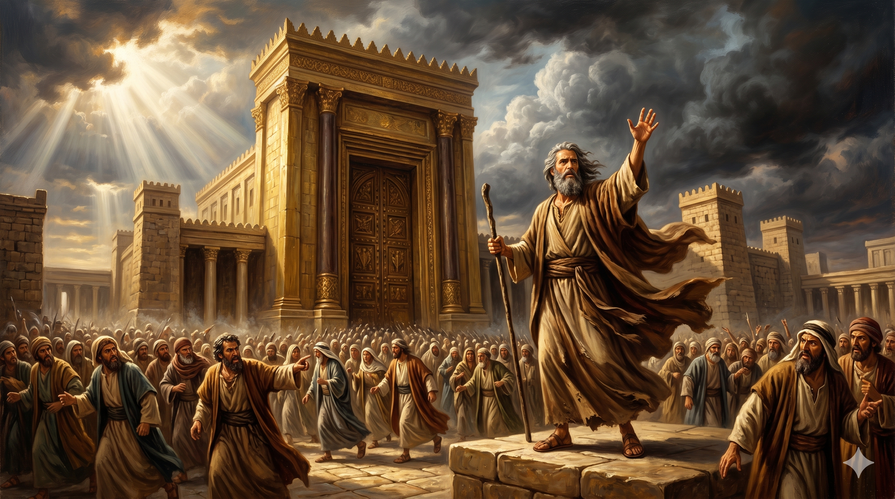

하늘과 땅을 증인으로 삼아 이스라엘을 기소하시는 하나님 — 상처 입은 아버지의 음성으로 "내가 아들을 길렀거늘 그들이 나를 거역하였다" 선포하시는 이사야의 첫 번째 설교. 황폐해진 도성과 멀리 솟은 성전이 대비를 이루는 장면
"하늘이여 들으라 땅이여 귀를 기울이라 여호와께서 말씀하시기를 내가 자식을 양육하였거늘 그들이 나를 거역하였도다 소는 그 임자를 알고 나귀는 그 주인의 구유를 알건마는 이스라엘은 알지 못하고 나의 백성은 깨닫지 못하는도다 하셨도다 … 여호와께서 말씀하시되 오라 우리가 서로 변론하자 너희의 죄가 주홍 같을지라도 눈과 같이 희어질 것이요 진홍 같이 붉을지라도 양털 같이 희게 되리라" — 이사야 1:2-3, 18
이사야 1장은 이사야서 전체의 기소장입니다. 하나님은 하늘과 땅을 법정의 증인으로 삼으시고, 이스라엘을 피고의 자리에 세우십니다. 죄목은 단 하나 — 반역입니다. "내가 자식을 양육하였거늘 그들이 나를 거역하였도다"(1:2). 하나님은 법관이 아니라 아버지로서 고소하십니다. 이 문장에는 분노보다 슬픔이, 심판보다 상실감이 깔려 있습니다. 소는 주인을 알고, 나귀는 구유를 압니다. 그런데 하나님의 백성은 자신을 사랑하신 하나님을 알지 못합니다. 이보다 더 가슴 아픈 고발이 있을까요? 온 나라는 상처와 멍과 썩은 상처로 가득하고(1:6), 도성은 딸과 같이 황폐해졌습니다(1:8).
그러나 이 장의 결정적 반전은 1:11-18에 있습니다. 하나님은 그들의 번제와 제사, 월삭과 성회까지 싫어하신다고 선언하십니다. "너희의 무수한 제물이 내게 무엇이 유익하뇨"(1:11). 예배의 형식은 넘치지만 삶에 정의와 긍휼이 없었기 때문입니다. "너희의 손에 피가 가득하도다"(1:15). 그러나 여기서 심판으로 끝나지 않습니다. "오라 우리가 서로 변론하자"(1:18) — 이것은 법정 언어이지만, 하나님이 먼저 화해의 손을 내미시는 초청입니다. 주홍 같은 죄, 진홍 같이 붉은 죄라도 눈과 양털처럼 희어질 수 있다는 약속은 이사야서 전체의 주제 — 심판 너머에 있는 구원 — 을 이미 1장에서 선포합니다.
"오라 우리가 서로 변론하자" — 죄인에게 먼저 손을 내미시는 하나님의 모습. 주홍빛 옷이 눈처럼 희어지는 상징적 장면. 심판의 선언 뒤에 숨겨진 구원의 초청
소도 주인을 알고 나귀도 구유를 안다는 이 비교는 오늘 우리에게도 날카롭게 찌릅니다. 우리는 매주 예배당에 가고, 기도하고, 헌금합니다. 그런데 하나님이 물으십니다. "너는 나를 아느냐?" 이사야의 시대처럼, 예배의 형식은 넘치지만 일상에서 억울한 이웃을 외면하고, 약자를 돌아보지 않는다면, 하나님은 그 예배를 기뻐 받지 않으십니다. 1:16-17은 단순합니다. "스스로 씻으라, 악행을 버리라, 선행을 배우라, 공의를 구하라, 학대받는 자를 도우라, 고아와 과부를 돌보라." 예배와 삶이 일치할 때 하나님은 기뻐 받으십니다.
더 놀라운 것은 하나님이 먼저 화해를 제안하신다는 사실입니다. "오라 우리가 서로 변론하자" — 이 초청 앞에 죄의 크기는 장애물이 되지 않습니다. 주홍 같아도, 진홍 같아도 희어진다고 하십니다. 하나님은 심판의 선언을 하시면서도, 그 끝에 은혜의 문을 활짝 열어 두십니다. 오늘 우리가 드려야 할 것은 번잡한 종교적 의식이 아니라, 진실한 회개와 이웃을 향한 공의입니다. 그 손을 잡으실 때 하나님은 당신의 죄를 눈처럼 희게 하십니다.
소도 주인을 알고, 나귀도 구유를 압니다.
나는 오늘 나를 키우신 하나님을 알고 있습니까?
죄가 주홍 같을지라도 — 하나님은 오늘도 먼저 "오라"고 부르십니다.